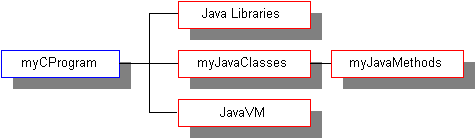
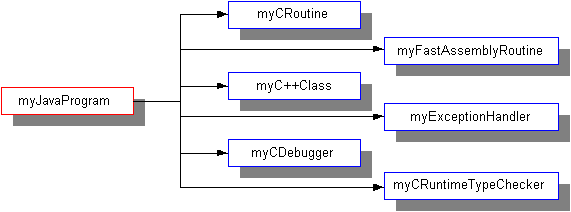

Feedback Form
|
|
Start of Tutorial > Start of Trail |
Search
Feedback Form |
The Java Native Interface (JNI) is the native programming interface for Java that is part of the JDK. By writing programs using the JNI, you ensure that your code is completely portable across all platforms.
The JNI allows Java code that runs within a Java Virtual Machine (VM) to operate with applications and libraries written in other languages, such as C, C++, and assembly. In addition, the Invocation API allows you to embed the Java Virtual Machine into your native applications.
Programmers use the JNI to write native methods to handle those situations when an application cannot be written entirely in the Java programming language. For example, you may need to use native methods and the JNI in the following situations:
- The standard Java class library may not support the platform-dependent features needed by your application.
- You may already have a library or application written in another programming language and you wish to make it accessible to Java applications.
- You may want to implement a small portion of time-critical code in a lower-level programming language, such as assembly, and then have your Java application call these functions.
Programming through the JNI framework lets you use native methods to do many operations. Native methods may represent legacy applications or they may be written explicitly to solve a problem that is best handled outside of the Java programming environment.
The JNI framework lets your native method utilize Java objects in the same way that Java code uses these objects. A native method can create Java objects, including arrays and strings, and then inspect and use these objects to perform its tasks. A native method can also inspect and use objects created by Java application code. A native method can even update Java objects that it created or that were passed to it, and these updated objects are available to the Java application. Thus, both the native language side and the Java side of an application can create, update, and access Java objects and then share these objects between them.
Native methods can also easily call Java methods. Often, you will already have developed a library of Java methods. Your native method does not need to "re-invent the wheel" to perform functionality already incorporated in existing Java methods. The native method, using the JNI framework, can call the existing Java method, pass it the required parameters, and get the results back when the method completes.
The JNI enables you to use the advantages of the Java programming language from your native method. In particular, you can catch and throw exceptions from the native method and have these exceptions handled in the Java application. Native methods can also get information about Java classes. By calling special JNI functions, native methods can load Java classes and obtain class information. Finally, native methods can use the JNI to perform runtime type checking.
For example, the following figure shows how a legacy C program can use the JNI to link with Java libraries, call Java methods, use Java classes, and so on.

This figure has been reduced to fit on the page.
Click the image to view it at its natural size.The next figure illustrates calling native language functions from a Java application. This diagram shows the many possibilities for utilizing the JNI from a Java program, including calling C routines, using C++ classes, calling assembler routines, and so on.

This figure has been reduced to fit on the page.
Click the image to view it at its natural size.It is easy to see that the JNI serves as the glue between Java and native applications. The following diagram shows how the JNI ties the C side of an application to the Java side.
|
|
Start of Tutorial > Start of Trail |
Search
Feedback Form |